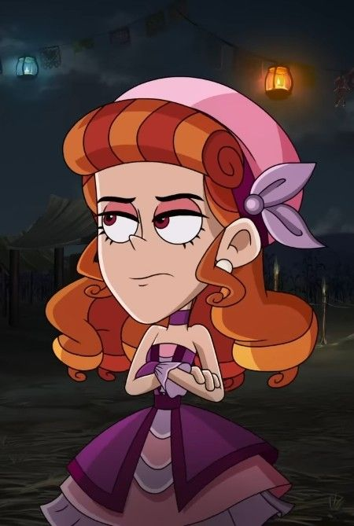
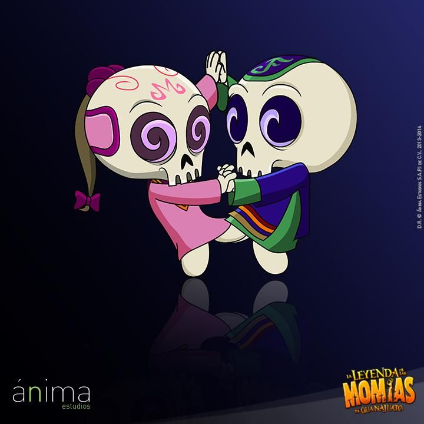
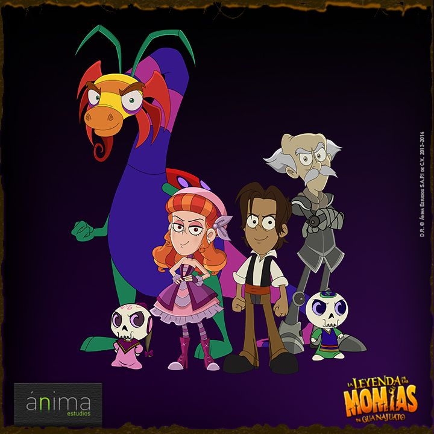

La Ofrenda
Elementos como cempasúchil, velas y pan de muerto guían y honran a quienes amamos.
La Tradición
Una mezcla de creencias ancestrales y costumbres actuales que celebran la memoria.
Galería de Recuerdos


